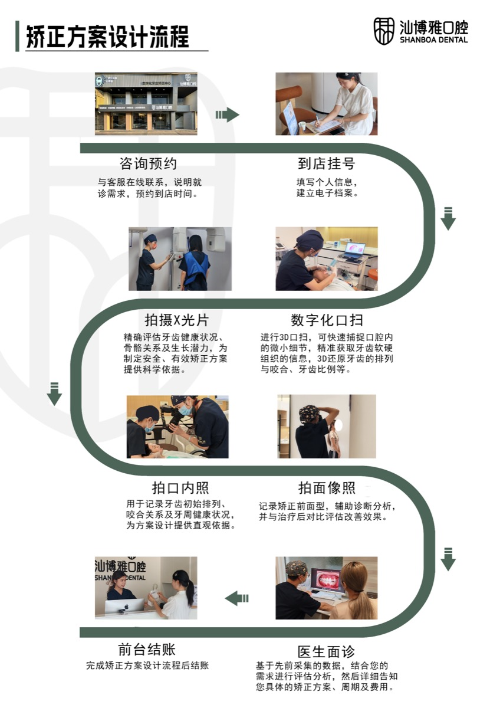

牙齿排列不齐不仅影响外观，还可能带来清洁困难、咬合不正等问题。牙齿矫正通过持续施力，引导牙齿移动到正确位置，是口腔科的成熟治疗手段。
矫正方案类型



隐形牙套（无托槽隐形矫治）
使用透明热塑材料制成的一系列活动矫治器，通过逐步更换套件推动牙齿移动。透明、几乎不可见，可摘戴，进食和刷牙不受影响。
适合：对美观要求较高的成年人和青少年，牙列拥挤程度中等以下，依从性好能坚持每天佩戴20至22小时的患者。
传统金属托槽矫正
将金属托槽粘接在牙面，通过弓丝施力，是历史最久、应用最广泛的矫正方式，控制力强，适用范围广。
适合：拥挤度较高或骨性问题的患者，对外观要求相对宽松的患者，依从性有限的青少年。
陶瓷托槽矫正
托槽材质改为牙色陶瓷，弓丝可选白色，美观度介于金属托槽和隐形牙套之间，控制力与金属托槽相近。
矫正流程
| 阶段 | 内容 | 时间 |
|---|---|---|
| 1. 初诊评估 | 口腔检查 + 数字化口腔扫描 + CBCT（复杂病例） | 1次就诊 |
| 2. 术前准备 | 处理龋齿/牙周问题，必要时拔牙 | 1至4周 |
| 3. 开始矫正 | 粘接托槽或戴隐形套件 | 当天开始 |
| 4. 定期复诊 | 每4至8周复诊，调整方案 | 全程 |
| 5. 保持阶段 | 戴保持器，防止复发 | 1至2年以上 |
矫正需要多久
- 轻度拥挤：12至18个月
- 中度问题：18至24个月
- 复杂骨性问题（含外科正畸）：24至36个月以上
影响疗程的因素包括：拥挤程度、是否需要拔牙、患者年龄、以及隐形矫正的佩戴配合度。
成年人做矫正合适吗
完全可以。牙槽骨终生具有改建能力，成年人在口腔健康状况良好的前提下，同样可以进行矫正治疗。成年人矫正前需评估牙周状况，牙周炎活动期不建议矫正。
常见问题 FAQ
矫正牙齿会疼吗？
加力后1至3天内牙齿会有酸胀感，属正常反应，通常随时间适应后缓解。每次复诊调整后可能再次出现类似不适。
矫正一定要拔牙吗？
不一定。是否需要拔牙取决于拥挤程度和矫正目标，由医生分析后决定。轻度拥挤可通过扩弓等方式解决，不需要拔牙。
矫正后牙齿会复发吗？
矫正结束后牙齿有向原位回移的趋势，规范佩戴保持器是防止复发的核心，请务必遵从医生指导。
隐形矫正和传统矫正哪个效果更好？
对于适合的病例，两者效果相当。隐形矫治更美观、舒适，适用于中等程度问题；传统矫正控制力强，适用范围更广。由医生根据具体情况推荐。
汕博雅口腔 · 牙齿矫正服务
汕博雅口腔位于汕头市濠江区，提供传统托槽矫正和隐形矫治方案。配备数字化口腔扫描仪，初诊时即可完成三维牙列数据采集，替代传统石膏取模，提升方案设计精度。
广东省汕头市濠江区
服务项目：牙齿矫正、种植牙、儿童口腔、牙齿修复、洗牙预防